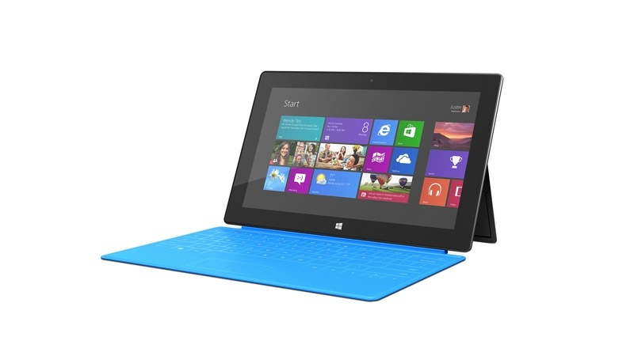
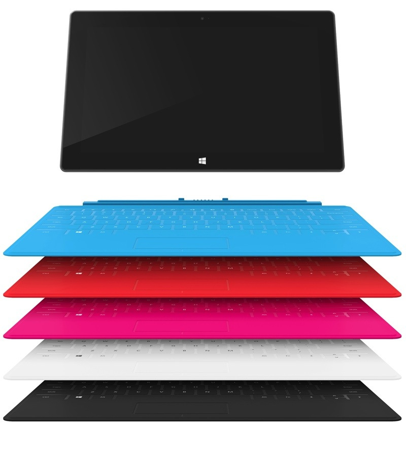

Is the Microsoft Surface for Me?
In the last 2 days the biggest question I’ve heard is what makes this device good for me? The best response I’ve had for that is if you are a standard user, the Surface can be your only computer and you will not skip a beat with your day to day life.
[caption id=”attachment_48” align=”aligncenter” width=”800”] Microsoft Surface with Cyan Touch Cover[/caption]
{kind=link}
First I would like to start out by defining what I consider a “Standard User”. A standard user is someone who uses a computer for email, social media, blogging, consuming media (Music/Video) and casual gaming. This user can potentially be on the go and doing all of these things but this is not a requirement nor does it hurt if they are.
In my 2 days of owning the Surface I’ve tried as much as possible with the time I had available to me. I started out last night by using it to listen to music while I wrote a blog post. Once I finished that I spent a lot of time listening to music and chatting with people using Facebook and Twitter.
When I finally decided to get into bed I thought it’d be fun to turn on my Xbox and watch a movie using the Xbox Smart Glass; but I haven’t loaded any files on my Surface yet. So I had joined my Surface to the Home Group my desktop in my office runs and I already share out my video collection from it. All I had to do was open my Video App and open the file over the network, I clicked the button to play on Xbox and within 5-10 seconds the movie was playing on my TV in my bedroom connected to an Xbox which had the video pushed to it from my Surface that was next to my bed and playing movies from my desktop that was in my office. The above may sound complicated but it is quite easy by setting up a HomeGroup. You can learn how to do this by reading Setting Up a HomeGroup with Windows 8.
During all of these activities I didn’t charge my Surface and I spent ~ 4 hours that night doing the above mixed activities on the Surface. The next day I didn’t start using the Surface until about 6pm when I decided I felt like baking! I had recently began converting all of my recipes into a OneNote Document so I can access it on my iPhone, on any computer that is connected to the internet and on my Surface. So all I had to do was open OneNote MX and open the page for the Pumpkin Roll I felt like making.
I had set my Surface to not dim the screen or go to sleep, and I was baking different things for 3-4 hours. When I finally got done using the Surface across these 2 days my battery life was at about 40%. I am very happy to say I am absolutely amazed at the battery life and functionality that I have gotten with this Surface.
So to summarize the moral of this blog post I would like to note the following.
Do you…
- blog?
- read/write email?
- use Word, PowerPoint, Excel and/or OneNote?
- Consume content(Movies/Music)?
If you do then the Surface is your new best friend!
[caption id=”attachment_49” align=”aligncenter” width=”800”] Microsoft Surface with all Touch Cover Colors[/caption]
{kind=link}
Image Source: BGR